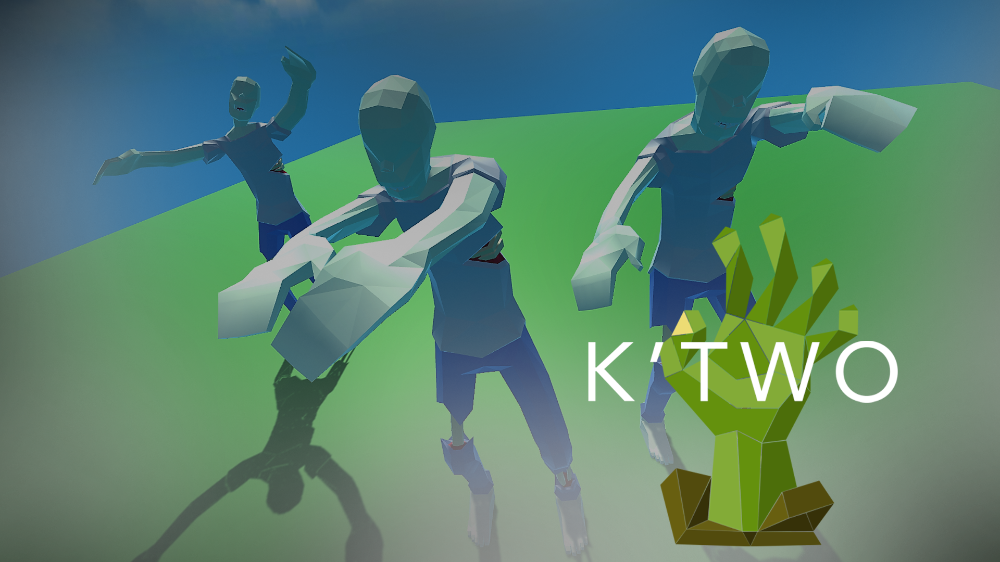

Alejandro Zapata
Game developer and technical artist. I study Computer Science, Math, and 3D Animation at LMU.
Loyola Marymount University
GPA: 3.84
Works in progress
K'two
K’two is a 1-4 player, browser-based, online multiplayer, class-based, zombie wave survival game. It's the sequel to a game built by an LMU CS professor 8 years ago: k'tah.
 Play a WIP build here!DunGen
Procedural RPG dungeon layout generator utilizing modern causal inference.
 Take a look at the repo for this project here!
Take a look at the repo for this project here!
Past Projects
Kawaii Kick
Kawaii Kick, a 2D platforming game developed along with 15 classmates using Unreal Engine 4.
Role: Lead Game programmer
Body and Facial Motion Capture
Body and facial motion capture shoot and animation cleanup using the Taliah character rig from HeartWired.
Mocap and voice actor: Natasha Aquino
Character rig by Greg Richardson
Motion Capture animation cleanup (Motion Builder)
Weight lifting mocap cleanup using a default MOBU character rig.
3D Animation
Modeling, Textures, Rigging, and Animation by Me! (Maya)
Animation Scripting
Maya Incremental Save script
Save a new version of your current work with the click of an icon! If your project was not saved already, you will be prompted for a name. Automatically appends _v00x and increments a project!
Take a look at the script here!Customized Open File script
Open your native OS file explorer to select a project to open in Maya. Default your file explorer to a directory of your choosing. Saves time when working in custom project folders! Prompts you to save current scene with the Incremental Save script.
 Take a look at the script here!
Take a look at the script here!
Heartwired
Both of the scripts above, and more, were used in the production of this game!
Check the game out here!Miscellaneous
Digital Art
Reimagining my dogs, BaoBao and Charlie, as hipsters.
Resume
Interests
Aside from making games, I really like playing them! My current favorites are Final Fantasy XIV, World of Warcraft, Apex Legends, and Kingdom Hearts III. Let's talk about Kingdom Hearts over email...
I also really like anime and like to keep up with the current seasonal shows. Let's talk about those too B).